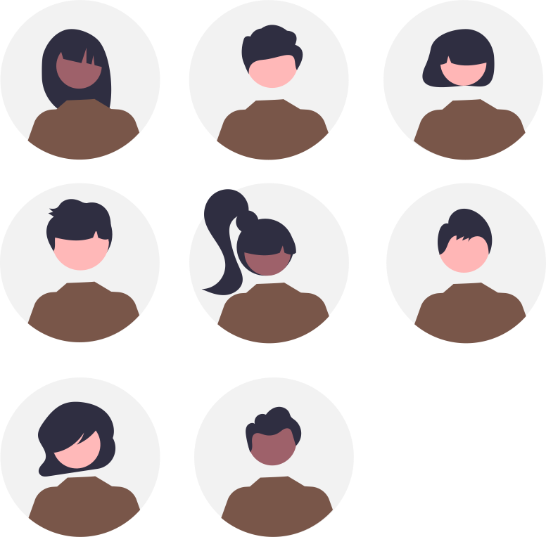

Accueil
 Ce site s'adresse à des élèves de terminale du lycée Notre Dame du Mur de MORLAIX pour la vie de classe, l'orientation et les projets en SI et NSI...
Ce site s'adresse à des élèves de terminale du lycée Notre Dame du Mur de MORLAIX pour la vie de classe, l'orientation et les projets en SI et NSI...

Vie de classe du 07/01#
Séance SI-NSI des 06 et 07/11#
Vie de classe du 01/10#
-
Orientation, demandez le programme :
- Lancement du forum en ligne le lundi 07/10 (PASS pour cette première session), mail d'inscription avenir mercredi ou jeudi.
- Le mardi 15/10 sur l'heure de classe : des représentants de l'armée viendront présenter les formations qu'ils offrent aux futurs bacheliers, mail d'inscription avenir...
-
Faire la campagne de rentrée sur PIX avec le code
MDTWKP783;
Séance SI-NSI des 18 et 19/09#
-
Découvrir le fonctionnement des réseaux informatiques par la pratique :
- Finalisation de Network-TP2 Capytale c91a-3900713 ;
-
Projets, objectif "Fête de la science" le 7 octobre... -> Compléter votre TODO liste, prioriser les tâches et vérifier leur faisabilité technique.
- Poursuivre les travaux engagés...
Vie de classe du 17/09#
Séance SI-NSI du 12/09#
-
Découvrir le fonctionnement des réseaux informatiques par la pratique :
- Retour sur Network-TP1 Capytale e7c0-3876579 ;
- Mise en oeuvre de Network-TP2 Capytale c91a-3900713 ;
-
Projets, objectif "Fête de la science" le 7 octobre... -> Compléter votre TODO liste, prioriser les tâches et vérifier leur faisabilité technique.
- Poursuivre les travaux engagés...
Séance SI-NSI du 11/09#
- Découvrir le fonctionnement des réseaux informatiques par la pratique : Network-TP1 ;
-
Projets, objectif "Fête de la science" le 7 octobre... -> Compléter votre TODO liste, prioriser les tâches et vérifier leur faisabilité technique.
- Poursuivre les travaux engagés...
Séance SI-NSI du 05/09#
- Projets, objectif "Fête de la science" le 7 octobre...
Organisés en équipages de projet autour des quatre domaines d'études résultants de votre séance de brainstorming :
- l'élévation du niveau de la mer (Ambre, Ivan et Anaël) ;
- la pollution plastique des océans (Noah, Rywan et Théophile) ;
- les communications en mer (Louise, Loïc et Nathan);
- les énergies en mer (Louis, Eliott et Pierre-Alain)...
- Créer un dépot partagé pour votre projet sur GitHub ;
- Faire des recherches documentaires afin de préciser vos sujets respectifs ;
- Initier la production de votre médiation scientifique à destination de collégiens de quatrième en listant vos tâches dans une TODO liste en mode agile...
- Poursuivre les travaux engagés...
Séance SI-NSI du 04/09#
-
Présentation du fonctionnement...
-
Projets, objectif "Fête de la science" le 7 octobre... -> Réflexion collective en mode "brainstorming" pour trouver des pistes de médiation scientifique de préférence en lien avec le thème retenu
- Poursuivre les travaux engagés...
Vie de classe du 02/09#
- Accueil
- Présentation du professeur principal-référent
-
Rappels
- Self
- Pas de vérification des régimes pour l’instant
- Explications : EXT, DP2 ou 3 ou 4, DP5, INT, BOX. Changement possible au + vite. Rappel : engagement pris pour toute l’année.
- Distribution cartes de self + consignes.
Remarques : Possibilité de déjeuner au self ou à la cafétéria. Inscription possible pour les externes (et DP2 ou 3 ou 4) avant 9h sur EcoleDirecte. Rappel : pas de modification du régime annuel.
- Carnet de correspondance sur EcoleDirecte.
-
Lecture du règlement intérieur
La zone fumeurs n’est accessible qu'aux récréations.
Ce document est accessible, comme d'autres, depuis la page informations-pratiques du site du lycée -
Présentation des ressources informatiques : ENT, Drive, Ecole Directe
Précision sur Ecole Directe ou panneau d’affichage pour les modifications d’EDT. Nécessité de consulter panneau d’affichage quotidiennement.
Identifiant école directe : les élèves utilisent leur propre identifiant et pas le compte “famille”.
Certificat de scolarité accessible sur Ecole Directe. -
ASSR2 (passé normalement en 3e) ?
-
Options et emploi du temps
- Vérification des options
En cas d’erreur, barrer en rouge et modifier sur document papier puis le déposer dans le casier du coordinateur de niveau pour vérification et validation. Pas de changement accepté par rapport aux choix faits à l’inscription.
- Distribution EDT individuels élèves + Informer les élèves concernés par des anomalies (liste définie en réunion PP)
- Vérification des options
-
Sur les heures de permanence, inscription préalable en Perm0 ou Perm1 puis possibilité de :
- Travaux de groupes en Perm1 ;
- Travail individuel en silence en Perm0 ;
- Accès à l’Escale (foyer) et au CDI dans la limite des places disponibles.
Possibilité de dispense d’étude sur présentation d’un justificatif du responsable légal pour : code, conduite, immersions…
-
Autres documents si besoin : Décharge médicale + fiche de renseignement + autorisation de sortie – charte conducteur (à l'accueil).
-
Casiers
Constituer des binômes. Attendre d’avoir un casier affecté par la vie scolaire (affichage rapide dans l’atrium).
-
Noter les dates importantes dans l’agenda et commenter si nécessaire
- Photos de classe le 10/09 ;
- Réunion d’information aux parents : le 18/09 en TGT à 18h ;
- Réunions individuelles (TGT rdv avec PR si besoin ou demande) ;
- Election des délégués : fin septembre ;
- Pas de conseil de profs mais un questionnaire à lancer aux profs pour savoir les situations à surveiller ;
- Période de bacs blancs : cf planning ;
- Fin du 1er trimestre : le 27/11 ;
- Conseils de classe du 1er trimestre : semaine du 02/12 ;
-
Fiche de renseignements pour l'orientation -> A réaliser au format
Markdownet à transmettre par mail -
PIX : Nouvelles modalités pour le bac...